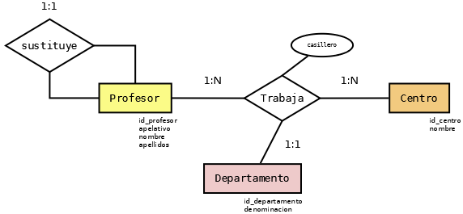

4. Conectores a bases de datos relacionales#
Las bases de datos relacionales son unos de los mecanismos más utilizados para el almacenamiento organizado de información. Su problema, al ser accedidas mediante aplicaciones es que basan su estructrura en el modelo relacional, que no es el modelo que usan los lenguajes de programación para manejar datos. En concreto, los más habituales, los lenguajes de POO manejan los datos haciendo uso del modelo de objetos por lo que existe una discrepación entre el modo en que tratan los datos los SGBD relacionales y el modo en que los tratan los lenguajes. Para afrontarlo los lenguajes utilizan dos estrategias distintas:
El uso de conectores, en que el acceso a la base de datos se realiza mediante sentencias SQL y la traducción del modelo relacional al modelo de objetos corre a cargo del programador.
El uso de herramientas ORM en que la traducción entre ambos modelos corre a cargo de la propia herramienta siguiendo las orientaciones del programador.
Podemos entender mejor estas dos estrategias, si las comparamos con estrategias ya vistas anteriormente para acceder a otros soportes de datos:
La primera estrategia es la misma que sigue la librería commons-csv para leer y escribir CSV.
La segunda estrategia es la que sigue la librería Jackson para leer y escribir distintos formatos.
Ambas estrategias tienen sus ventajas e inconvenientes:
- Ventajas de los conectores
Mayor control sobre las operaciones, al definirse manualmente, lo que permite ajustar más la solución al problema concreto o utilizar características avanzadas de SQL.
Al haber menos abstracción, suele ser una estrategia de mayor rendimiento.
Es una solución más fácilmente depurable.
Las sentencias SQL son independientes del lenguaje de programación en que se escriba la aplicación, pese a lo cual habrá que traducir el código al nuevo lenguaje.
Son más sencillos de usar que un ORM.
Los conectores suelen formar parte de las librerías básicas del lenguaje por lo que no necesitaremos usar una librería de terceros (la librería ORM) ni tendremos que reescribir el código si decidimos cambiar a un ORM distinto.
- Ventajas de las herramientas ORM
Al proveer un mecanismo para traducir el modelo relacional al modelo de datos del lenguaje de programación (modelo de objetos), son herramientas más productivas.
El programador trata los datos directamente como objetos lo que hace el código más sencillo y manipulable.
Generalmente, cambiar de SGBD es trivial, puesto que la herramienta nos abstrae de sus particularidades. Su uso, por tanto, nos independencia de cuál sea el SGBD que gestione los datos frente a los conectores que usan sentencias SQL, generalmente dependientes de cuál es el SGBD. En contrapartida, puede resultar muy trabajoso cambiar de ORM
En esta unidad abordaremos la primera estrategia y dejaremos la segunda para la unidad siguiente.
Java proporciona para el acceso a bases de datos relacionales una API en su JDK llamada JDBC, lo que posibilita que el acceso sea idéntico sea cual sea el SGBD que se decida utilizar. Esto no significa que el código sea independiente del motor subyacente, puesto que cada motor tiene sus particularidades que extienden el SQL estándar y esta estrategia, al estar basada en la construcción de sentencias SQL, nos obliga a utilizarlas. Lo que en realidad es común son los métodos que proporciona Java para ordenar la ejecución de las sentencias al motor de la base de datos. Además de la API, necesitaremos para cada SGBD un driver basado en la API que posibilite la conexión. Este driver sí que será una librería de terceros que deberemos incluir en nuestro proyecto.
4.1. Aperitivo#
Para aprender y practicar el acceso con conectores, podemos escoger cualquier SGBD. Utilizaremos en el caso de estos apuntes, SQLite por varias razones:
Comodidad, ya que a diferencia de otros (MariaDB, Oracle, etc) no requiere un servidor: la base de datos es un archivo.
Es una base de datos empotrada y se usa mucho en aplicaciones que necesitan organizar sus datos en una base de datos exclusiva en la que no concurrirán otros procesos.
Con la excepción de las propias sentencias SQL que pueden variar de SGBD o SGBD, las explicaciones serán totalmente válidas. Antes, no obstante, es necesario que tengamos instalado el motor. En el caso de SQLite:
Las distribuciones de Linux suelen incluir un paquete por lo que su instalación es trivial.
Para sistemas Windows la página oficial ofrece binarios precompilados, pero no un instalador automático. La instalación, no obstante, es sencilla:
a. Guardar los archivos suministrados dentro del zip en un lugar adecuado (p.e.
C:\Program Files\SQLite). #. Añadir el directorio al PATH del sistema.
Nota
Procuramos escribir sentencias SQL que cumplan el estándar para que el código sea lo más portable posible.
Además, necesitaremos importar en nuestro proyecto la librería propia de SQLite: sqlite-jdbc.
Ejercicio ilustrativo
Tomemos como base el ejercicio ilustrativo con que introducimos XML, aunque con algunos cambios (generalizaciones):
Puede haber varios claustros.
Un mismo profesor puede trabajar en varios claustro diferentes.
Si se da la anterior circunstancia, el profesor se adcribirá a un departamento[1] por centro, pero no tiene que ser para todos los centros el mismo.
De igual modo, en un centro puede tener asignado uno o varios casilleros distintos a los que tiene en otro.
Esto podemos representarlo gráficamente con el siguente diagrama E/R:
Podemos traducir el anterior esquema al modelo relacional así:
Centro(*idCentro*, nombre)
Profesor(*idProfesor*, casillero, sustituye, apelativo, apellidos, nombre)
Departamento(*idDepartamento*, denominacion)
Trabaja(*idProfesor, idCcentro*, departamento)
4.2. Conexión#
Lo primero que debemos aprender es cómo abrir una conexión a la base de datos:
final String protocol = "jdbc:sqlite:";
// Las bases de datos de SQLite son archivos.
Path dbPath = Path.of(System.getProperty("java.io.tmpdir"), "test.db");
String dbUrl = String.format("%s%s", dbProtocol, dbPath);
// Alternativa particular de SQLite: base de datos en memoria.
//String dbUrl = String.format("%s%s", dbProtocol, ":memory:");
try (
Connection conn = DriverManager.getConnection(dbUrl, /* usuario */ null, /* contraseña */, null);
) {
System.out.println("Hemos logrado conectar a la base de datos");
}
catch(SQLException err) {
System.err.println("Error de conexión. " + err.getMessage());
}
En el código de ejemplo, hay dos claves fundamentales:
La URL de conexión que se compone, a su vez de:
El protocolo que identifica al SGBD
La indicación de la base de datos a la que queremos conectar.
Esta URL depende del SGBD, así que tendremos que tener presente cuál estamos utilizando al construirla:
SGBD
Librería JDBC
URL[2]
SQLite
jdbc:sqlite:<ruta>
MariaDB
jdbc:mariadb://[<host>[:<port>]]/<base_datos>
MySQL
jdbc:mysql://[<host>[:<port>]]/[base_datos]
PostgreSQL
jdbc:postgresql://[<host>[:<port>]]/<base_datos>
Oracle
jdbc:oracle:thin:@//<host>[:<port>]/<SID/ServerName>
SQL Server
jdbc:sqlserver://<host>[:<port>];databaseName=<base_datos>
El objeto de conexión, creado con las estructura try-with-resources, para que se cierre automáticamente. Al crear el objeto es necesario facilitar la URL, y un usuario y una contraseña con permisos para realizar las operaciones que se desee llevar acabo.
Nota
Como SQLite no define permisos para usuarios, sólo es necesaria la URL. Se ha dejado explícita esta falta de necesidad, pero podríamos haber definido el método ahorrándonos los dos argumentos:
Connection conn = DriverManager.getConnection(dbUrl);
Por supuesto, el código es completamente inútil: nos hemos conectado a la base de datos para no hacer absolutamente nada. En los siguientes apartados veremos como leer y escribir datos.
4.3. Ejecución de sentencias#
El acceso mediante conectores se basa en la ejecución de sentencias SQL que pueden ser de dos tipos:
Sentencias que modifican la base de datos.
Sentencias que obtienen datos sin llevar a cabo modificación alguna.
A partir de un objeto Statement, para las primeras se
usa el método executeUpdate, mientras que para las segundas el método
executeQuery.
Nota
Hay otro método, execute que sirve para ambos casos y que devuelve
true, si hay resultados (segundo caso) o false, si no los hay.
Como lo normal es que se sepa de antemano si la sentencia devuelve datos o no
(p.e. un SELECT devuelve datos; un INSERT, no), podemos prescindir de
ella.
4.3.1. Simples#
Comencemos creado cuatro tablas:
final String protocol = "jdbc:sqlite:";
String dbUrl = String.format("%s%s", dbProtocol, ":memory:"); // Base de datos en la memoria
try (
Connection conn = DriverManager.getConnection(url);
Statement stmt = conn.createStatement();
) {
// Particular de SQLite: respetar la integredad referencial (opcional).
stmt.execute("PRAGMA foreign_keys = ON");
// Tabla Departamento.
stmt.executeUpdate("""
CREATE TABLE Departamento (
id_departamento INTEGER PRIMARY KEY /* GENERATED BY DEFAULT AS IDENTITY */,
denominacion VARCHAR(50) NOT NULL
);
""");
// Tabla Centro
stmt.executeUpdate("""
CREATE TABLE Centro (
id_centro INTEGER PRIMARY KEY /* GENERATED BY DEFAULT AS IDENTITY */,
nombre VARCHAR(100) NOT NULL
);
""");
// Tabla Profesor.
stmt.executeUpdate("""
CREATE TABLE Profesor (
id_profesor INTEGER PRIMARY KEY /* GENERATED BY DEFAULT AS IDENTITY */,
apelativo VARCHAR(50) NOT NULL,
nombre VARCHAR(75) NOT NULL,
apellidos VARCHAR(150) NOT NULL,
sustituye INTEGER UNIQUE DEFAULT NULL,
CONSTRAINT fk_pro_pro FOREIGN KEY(sustituye) REFERENCES Profesor(id_profesor)
ON DELETE SET NULL
ON UPDATE CASCADE
);
""");
// Relación Profesor-Centro.
stmt.executaUpdate("""
CREATE TABLE Trabaja (
profesor INTEGER,
centro INTEGER,
departamento INTEGER,
-- Para permitir que un mismo profesor tenga varios casilleros.
casillero INTEGER ARRAY NOT NULL,
CONSTRAINT pk_tra PRIMARY KEY(profesor, centro),
CONSTRAINT fk_tra_pro FOREIGN KEY(profesor) REFERENCES Profesor(id_profesor)
ON DELETE CASCADE
ON UPDATE CASCADE,
CONSTRAINT fk_tra_cla FOREIGN KEY(centro) REFERENCES Centro(id_centro)
ON DELETE CASCADE
ON UPDATE CASCADE,
CONSTRAINT fk_est_dep FOREIGN KEY("departamento") REFERENCES Departamento(id_departamento)
ON DELETE SET NULL
ON UPDATE CASCADE
);
""");
// Trigger para evitar que un sustituto pueda aparecer en Trabaja,
// ya que su trabajo debe ser el del titular. ESTO NO ES ESTÁNDAR.
stmt.executeUpdate("""
CREATE TRIGGER NoSustitutoEnTrabaja
BEFORE INSERT ON Trabaja
FOR EACH ROW
WHEN (SELECT sustituye FROM Profesor WHERE id_profesor = NEW.profesor) IS NOT NULL
BEGIN
SELECT RAISE(FAIL, 'Imposible registrar un sustituto en Trabaja: hace la misma labor que el sustituido.');
END;
""");
// Más sentencias que ya veremos.
}
catch(SQLException err) {
err.printStackTrace();
System.exit(1);
}
El código tiene dos aspectos:
Las sentencias SQL que son sentencias SQL cuya comprensión no forma parte de los objetivos de esta unidad[3], así que no entraremos en comentarlas.
Consejo
No obstante si conviene precisar que procuremos al escribirlas ceñirnos al estándar lo más posible a fin de que sean lo más universales posibles y nos sea menos costoso cambiar de SGBD. A este respecto:
Dejamos de escribir los nombres de elementos de la base de datos (tablas, columnas) entre comillas dobles, porque el estándar SQL lo permite en caso de que los nombres no contengan caracteres “raros” (espacios, etc.) o no se tenga la intención de distinguir nombres cambiando entre mayúsculas y minúsculas (p.e. que una tabla se llame Persona y otra distinta persona o PERSONA)[4].
Escribimos para los tipos los nombres que define el estándar.
Las cadenas se encierran entre comillas simples.
La ejecución de esas sentencias usando JDBC. Obsérvese que:
Reaprovechamos el mismo objeto Statement para ejecutarlas todas.
Las ejecutamos usando el método
executeUpdate, puesto que su función es modificar el contenido de la base de datos, no obtener información.
Tampoco las sentencias de inserción devuelven resultados, por lo que también podemos hacer:
// Agregamos algunos departamentos.
stmt.executeUpdate("INSERT INTO Departamento (denominacion) VALUES ('Informática')");
for(String denominacion: new String[] {"Inglés", "Francés", "Tecnología"}) {
stmt.executeUpdate(String.format("INSERT INTO Departamento (denominacion) VALUES ('%s');", denominacion));
}
Prudencia
Aún estamos empezando y sabemos poco así que estas sentencias son torpes por dos razones:
Estamos ejecutando repetidamente (cuatro veces) la misma sentencia y no es eficiente. Ya aprenderemos cómo hacer operaciones masivas.
Las sentencias usan valores almacenados en variables y hay que construirlas incluyendo esos valores dentro de las sentencias. Para ello nosotros hemos usado
String.format. Sin embargo, JDBC ya viene con un mecanismo específico para realizar esta labor: las sentencias parametrizadas.
Por tanto, no tome estos ejemplos muy en serio. Ya aprenderá a escribirlos mejor.
Ver también
Se proporcionan adicionalmente dos guiones para su uso directo con
SQLite: sustituye.sql, que
implementa la solución desarrollada aquí y sustituto.sql en que el campo sustituye se cambia por sustituto
para que su significado sea quién es el sustituto del profesor en vez de a
quién sustituye el profesor. En ambas soluciones, al código Java mostrado se
añaden algunos INSERT para agregar registros a la base de datos y se
define una CTE recursiva (totalmente compatible con el estándar SQL) para
que la propia base de datos nos cree una vista (PlantillaFuncionamiento)
que muestra cada profesor, a qué titular en último caso sustituye (o él mismo
si es titular) y si está activo o no. Esta vista es de enorme utilidad para
saber en dónde trabaja cada profesor, ya que la tabla Trabaja sólo contiene
profesores titulares.
Consultas
Las consultas, en cambio, sí devuelven resultados, que deberán procesarse luego:
ResultSet rs = stmt.executeQuery("SELECT * FROM Departamento;");
while(rs.next()) {
int id = rs.getInt("id_departamento");
String denominacion = rs.getString("denominacion");
System.out.println(String.format("ID: %d -- nombre: %s", id, denominacion));
}
Como se ilustra arriba, el resultado de las consultas se obtiene a través de un
objeto ResultSet que se va consumiendo a medida que obtenemos registros de él.
En el ejemplo, nos hemos limitado a imprimirlos, pero si nuestro programa
pretendiera hacer algo útil, tendríamos que trasladar esta información al modelo
de objetos de Java, Por ejemplo, suponiendo que hubiéramos definido una clase
Departamento así:
/*
* Esto en realidad se debería comportar como un Enum. Podríamos redefinir la
* clase, para que tuviera ese comportamiento y al cargar los datos de la tabla,
* impidiera crear más objetos.
*/
public class Departamento {
private int id;
private String denominacion;
public Departamento() { super(); }
public Departamento cargarDatos(int id, String denominacion) {
setId(id);
setDenominacion(denominacion);
return this;
}
public int getId() {
return id;
}
public void setId(int id) {
this.id = id;
}
public String getDenominacion() {
return denominacion;
}
public void setDenominacion(String denominacion) {
this.denominacion = denominacion;
}
}
podríamos hacer esto:
ResultSet rs = stmt.executeQuery("SELECT * FROM Departamento");
List<Departamento> departamentos = new ArrayList<>();
while(rs.next()) {
int id = rs.getInt("idDepartamento");
String denominacion = rs.getString("denominacion");
departamentos.add(new Departamento().cargarDatos(id, denominacion));
System.out.println(String.format("ID: %d -- nombre: %s", id, denominacion));
}
Importante
Obsérvese que tiene que ser el programador el que traduzca el modelo relacional al modelo de objetos, tal como adelantamos en la introducción.
4.3.2. Parametrizadas#
Las sentencias, tanto las de manipulación como las de consultas, requieren en muchos casos que se incluyan valores de variables en las propias sentencias (véase, sin ir más lejos, el ejemplo de inserción bajo el epígrafe anterior.). Por este motivo los conectores incluyen un mecanismo para parametrizar sentencias; y, en el caso de JDBC, se hace uso de PreparedStatement:
try(
PreparedStatement pstmt = conn.prepareStatement("INSERT INTO Departamento (denominacion) VALUES (?)")
) {
for(String denominacion: new String[] {"Informática", "Inglés", "Tecnología"}) {
pstmt.setString(1, denominacion); // 1: Valor para el primer "?".
pstmt.executeUpdate();
}
}
Por tanto, cuando se ejecutan sentencias parametrizadas, hay que definir el valor para todos los parámetros (el primero, el segundo, etc.) y cuando se han establecidos todos sus valores, ejecutar la sentencia.
Prudencia
Pero no hemos dado aún con la forma eficiente, ya que estamos repitiendo la ejecución de la misma sentencia con distintos valores y lo que hemos hecho no es en absoluto eficiente. Necesitaremos más adelante, darle al menos una vuelta más.
Obsérvese que al definir los valores de los parámetros de una consulta, necesitamos cambiar de método según sea el tipo del campo:
try(
PreparedStatement pstmt = conn.prepareStatement("INSERT INTO Profesor (apelativo, nombre, apellidos, sustituye) VALUES (?, ?, ?, ?)");
) {
pstmt.setString(1, "Manolo");
pstmt.setString(2, "Manuel");
pstmt.setString(3, "Peñalba Pinzón");
pstmt.setNull(4, Types.INTEGER);
pstmt.executeUpdate();
}
JDBC permite usar un método genérico (setObject) que se encargará de
inferir el tipo SQL correcto a partir del tipo de Java:
try(
PreparedStatement pstmt = conn.prepareStatement("""
INSERT INTO "Profesor" ("apelativo", "nombre", "apellidos", "sustituye") VALUES
(?, ?, ?, ?);
""")
) {
pstmt.setObject(1, "Manolo");
pstmt.setObject(2, "Manuel");
pstmt.setObject(3, "Peñalba Pinzón");
pstmt.setObject(4, null, Types.INTEGER); // No se puede inferir entero a partir de null
pstmt.executeUpdate();
}
El problema de setObject es que delegar la elección del tipo en el conector penaliza el
rendimiento.
4.4. Datos#
Hasta ahora no nos hemos detenido en las particularidades de los tipos de datos, ya que los que muestran nuestro ejemplo son bastante simples. Sin embargo, la correspondencia entre tipos de datos de Java y de SQL no es exacta, por lo que JDBC implementa los métodos setXXXX de PreparedStatement para guardar datos en la base de datos y los métodos getXXXX de ResultSet para recuperarlos.
En principio (aunque hay excepciones), podemos usar estos métodos y abstraernos de cómo implementa el tipo el SGBD el estándar SQL.
4.4.1. Datos simples#
Por datos simples entendemos los que representan caracteres, enteros, números reales(flotantes o de precisión fija) o booleanos y tienen, por lo general, un equivalente propio de Java.
Tipo SQL |
Tipo Java[5] |
Método JDBC de PreparedStatement |
|---|---|---|
CHAR(n)
VARCHAR(n)
|
setString(int idx, String v) |
|
SMALLINT
INTEGER
BIGINT
|
setShort(int idx, short v)
setInt(int idx, int v)
setLong(int idx, long v)
|
|
BOOLEAN |
setBoolean(int idx, boolean v)
|
|
NUMERIC/DECIMAL |
setBigDecimal(int idx, BigDecimal
|
|
FLOAT
DOUBLE
|
setFloat(int idx, float v)
setDouble(int idx, double v)
|
Nota
No hay más que sustituir set por get para obtener los métodos de PreparedStatement necesarios para guardar datos.
Ejemplos de cómo obtener o escribir datos de este tipo ya se han dejado escritos en los ejemplos de apartados anteriores. Sólo BigDecimal no es un tipo primitivo en Java, pero su uso es trivial:
BigDecimal comaFija = new BigDecimal("13.456");
SQLite
Dado que hemos escogido este SGBD para desarrollar la unidad, nos conviene centrarnos en sus particularidades. La característica fundamental de SQLite es que tiene tipado dinámico y cuál sea el tipo que declaremos al crear la tabla es irrelevante, porque el sistema gestor aceptará el dato con independencia de su tipo. Por ejemplo:
CREATE TABLE Persona (
nombre VARCHAR(255);
);
INSERT INTO Persona VALUES
("Manolo"), // Consecuente con la definición: no da problemas.
(4356); // Inconsecuente, pero da igual: el dato se almacena como entero.
De hecho, SQLite ni siquiera atiende a qué palabra usamos para definir el tipo y creará la tabla, incluso aunque nos inventemos el nombre del tipo:
CREATE TABLE Persona (
nombre TIPOINVENTADO // No da error.
);
Internamente, SQLite sólo dispone de datos de tipo texto, entero (de
diverso tamaño), doble y BLOB; y dependiendo del valor que se suministre usará
un tipo u otro para el dato. Así, CHAR y VARCHAR se asimilan a texto,
INTEGER, BIGINT, SMALLINT y BOOLEAN a enteros, FLOAT,
DOBLE y NUMERIC/DECIMAL a dobles (por tanto, se perderá la precisión
de este último tipo).
4.4.2. Datos complejos#
Los datos complejos se caracterizan porque el paquete java.sql tiene
definidos tipos específicos que se corresponden con los definidos en el estándar
SQL.
Tipo SQL |
Tipo Java |
Método JDBC de PreparedStatement |
|---|---|---|
DATE
TIME
TIMESTAMP
|
setDate(int idx, java.sql.Date v)
setTime(int idx, java.sql.Time v)
setTimestamp(int idx, java.sql.Timestamp v)
|
|
BLOB |
setBlob(int idx, java.sql.Blob v)
setBinaryStream(int idx, InputStream v)
|
|
CLOB |
setClob(int idx, java.sql.Clob v)
setCharacterStream(int idx, Reader v)
|
|
JSON |
setString(int idx, String v) |
|
ARRAY
STRUCT
|
setArray(int idx, java.sql.Array v)
setStruct(int idx, java.sql.Struct v)
|
4.4.2.1. Fechas y tiempos#
El estándar SQL define cinco tipos de datos para la expresión de tiempos:
DATEque sirve para definir fechas (p.e. '2014-01-08').TIMEque sirve para definir horas con precisión de segundos (p.e. '08:30:21'), aunque también podría incluirse precisión de hasta el microsegundo, añadiendo decimales al segundo.TIMESTAMPque combina en un mismo tipo fecha y hora (p.e. '2014-01-08 08:30:21').TIMESTAMP WITH TIME ZONEque permite almacenar, además, el huso horario (p.e. '2014-01-08 08:30:21+01:00').INTERVALpara almacenar periodos de tiempo (p.e. 'INTERVAL 2 DAYS' o 'INTERVAL 2 DAYS 10 HOURS').
A través de JDBC sólo se soportan directamente los tres primeros tipos y, además, se requiere saber cómo convertir entre java.sql.Date, java.sql.Time, java.sql.Timestamp y los tipos con los que frecuentemente se trabaja en Java.
import java.time.LocalDate;
import java.time.LocalTime;
import java.time.LocalDateTime;
import java.sql.Date;
import java.sql.Time;
import java.sql.Timestamp;
java.util.Date udate = new java.util.Date(); // Almacena fecha y hora.
// Date --> Date
Date date = new Date(udate.getTime());
// Date --> Date
udate = new Date(date.getTime());
// Date --> Time
Time time = new Time(date.getTime());
// Time --> Date
date = new Date(time.getTime());
// Date --> Timestamp
Timestamp timestamp = new Timestamp(date.getTime());
// Timestamp --> Date
date = new Date(timestamp.getTime());
LocalDate localDate = LocalDate.now();
// LocalDate --> Date
date = Date.valueOf(localDate);
// Date --> LocalDate
localDate = date.toLocalDate();
LocalTime localTime = LocalTime.now();
// LocalTime --> Time
sqltime = Time.valueOf(localTime);
// Time --> Localtime
localTime = Time.toLocalTime();
LocalDateTime localDateTime = LocalDateTime.now();
// LocalDateTime --> Timestamp
timestamp = Timestamp.valueOf(localDateTime);
// Timestamp --> LocalDateTime
localDateTime = timestamp.toLocalDateTime();
4.4.2.2. BLOB y CLOB#
Ambos tipos representan datos de tamaño considerable, BLOB un datos binarios
(p.e. una imagen) y CLOB un conjunto de caracteres, o sea, un texto grande
que el que se podrían almacenar con VARCHAR (cuyo límite depende del
SGBD). Al margen de esa diferencia, explicado uno, explicado el otro.
Por ejemplo, si tuviéramos un archivo con una foto que quisiéramos guardar en una base de datos podríamos hacer:
try (
Connection conn = DriverManager.getConnection(dbUrl);
) {
try(
PreparedStatement pstmt = conn.preparedStatement("INSERT INTO Persona (nombre, avatar) VALUES (?, ?)")
) {
Path archivo = Path.of("ruta", "al", "archivo", "jpg");
try(InputStream st = Files.newInputStream(archivo)) {
pstmt.setString(1, "Manolito");
pstmt.setBinaryStream(2, st);
pstmt.executeUpdate();
}
}
}
También podríamos querer guardar un archivo binaro ya cargado en memoria:
byte[] archivo = new byte[] {10, 20, 5, 50, 12, 221, 13}
Blob blob = conn.createBlob();
blob.setBytes(1, archivo); // Agregamos la secuencia de bytes al principio del Blob.
try (
Connection conn = DriverManager.getConnection(dbUrl);
) {
try(
PreparedStatement pstmt = conn.preparedStatement("INSERT INTO Persona (nombre, avatar) VALUES (?, ?)")
) {
pstmt.setString(1, "Manolito");
pstmt.setBlob(2, blob);
pstmt.executeUpdate();
}
finally {
blob.free(); // Vaciamos el blob para liberar la memoria.
}
}
4.4.2.3. JSON#
Desde SQL:2023 el estándar soporta de forma nativa el tipo JSON. Sin embargo, JDBC aún no tiene soporte alguno para ello, así que el único modo de tratarlo es a través de String.
4.4.2.4. ARRAY y STRUCT#
El tipo de dato ARRAY es, simplemente, una secuencia de datos de un mismo
tipo, o sea, lo que entenderíamos como array en cualquier lenguaje de
programación:
CREATE TABLE Trabaja (
profesor INTEGER,
claustro INTEGER,
departamento INTEGER,
-- Para poder asignar varios casilleros a un mismo profesor
casillero INTEGER ARRAY NOT NULL,
/* Restricciones */
);
STRUCT, en cambio, es un tipo de dato que permite incluir
como valor de un campo una estructura de datos al modo de las estructuras C o
los mapas de Python o Java:
// No pueden definirse restricciones en la definición, así que estas
// (p.e. tipo_via debería incluir un CHECK con varios valores)
// debe definirse en la tabla en la que se incluya este tipo struct.
CREATE TYPE domicilio AS (
tipo_via VARCHAR(40),
nombre_via VARCHAR(150),
numero INTEGER,
bloque CHAR(1),
escalera CHAR(1),
piso INTEGER,
letra CHAR(2)
);
SQLite
SQLite no soporta de forma nativa los datos complejos (ya explicamos al tratar los datos simples cómo funcionan en realidad los tipos en él). En particular:
DATE/TIME/TIMESTAMPPuede almacenarlos como una cadena (“2024-12-12”), un entero(el tiempo UNIX 1733961600) o un flotante (fecha juliana usada en Astronomía). Para darles soporte añade funciones específicas.
En el caso particular de JDBC,
setDatealmacenará la fecha como un entero, lo cual nos es indiferente si leemos los campos congetDate, pero quizás no nos guste tanto, si la lectura la hacemos por otros medios (p.e. usando directamente el cliente de SQLite sin echar mano de funciones específicas).BLOBEs el único dato complejo que realmente soporta SQLite, así que no tendremos problemas con él.
CLOBSQLite no le da un tratamiento especial y se trata como cualquier otra cadena, ya que internamente SQLite sólo tiene un tipo para datos que son cadenas. Sin embargo,
setClobno está implementado para él, por lo que tendremos que usarsetString.JSONNo tiene soporte nativo sino a través de funciones específicas. En cualquier caso, JDBC tampoco lo tiene con lo que tendrá que usarse
setStringigual que para el resto de SGBD.ARRAY/STRUCTNo tienen soporte en SQLite y, además, los métodos
setArrayysetStructno están implementados para el driver.
4.5. Transacciones#
Hasta ahora hemos obviado el concepto de transacción. Una transacción es una operación sobre la base datos, no necesariamente atómica, que debe completarse o no hacerse en absoluto, es decir, si una transacción se compone de dos operaciones (sentencias SQL), ambas operaciones deben realizarse.
Por ejemplo, en una tienda la venta de un bolígrafo implica dos cosas:
Ingresar el importe del bolígrafo.
Eliminar el bolígrafo del almacén.
Ambas operaciones son indisolubles y hemos de hacerlas para que se complete la venta, o no hacerlas en absoluto para que quede la venta pendiente. En cambio, si se hiciera una y no la otra, la base de datos quedaría en un estado inconsistente.
4.5.1. Manejo de transacciones#
En los ejemplos con que hemos ilustrado los distintos casos, cada sentencia SQL constituye una transacción diferente. Si queremos que varias sentencias pertenezcan a una misma transacción debemos hacer lo siguiente:
conn.setAutoCommit(false); // Evitamos que cada sentencia implique una transacción
try(
PreparedStatement pstmt = conn.prepareStatement("INSERT INTO Departamento (denominacion) VALUES (?)")
) {
for(String denominacion: new String[] {"Informática", "Inglés", "Tecnología"}) {
pstmt.setString(1, denominacion);
pstmt.executeUpdate();
}
conn.commit(); // Después de ejecutar todas las sentencias, las confirmamos.
}
catch(SQLException err) {
err.printStackTrace();
conn.rollback(); // Hubo un problema, no ejecutamos ninguna inserción.
}
finally {
conn.setAutoCommit(true);
}
Importante
En el ejemplo, las sentencias son una misma sentencia con distinto parámetros. Evidentemente, las transacciones pueden estar constituidas por cualesquiera sentencias.
Ver también
Más adelante se propone un mecanismo para gestionar transacciones con un bloque try-with-resources.
4.5.2. Operaciones masivas#
En el caso de que tengamos que llevar a cabos muchas operaciones que comparten la misma sentencia y distintos parámetros (como en el ejemplo anterior precisamente), el modo más eficiente para llevarlas a cabo es el siguiente:
conn.setAutoCommit(false); // Todas las inserciones forman parte de una transacción
try(
PreparedStatement pstmt = conn.prepareStatement("INSERT INTO Departamento (denominacion) VALUES (?)")
) {
for(String denominacion: new String[] {"Informática", "Inglés", "Tecnología"}) {
pstmt.setString(1, denominacion);
pstmt.addBatch(); // Añadimos la inserción al procedimiento.
}
pstmt.executeBatch(); // Ejecutamos todas las inserciones pendientes.
conn.commit(); // Grabamos la transacción.
}
catch(SQLException err) {
err.printStackTrace();
conn.rollback(); // Hubo un problema, no ejecutamos ninguna inserción.
}
finally {
conn.setAutoCommit(true);
}
4.6. Extras#
Arrinconamos bajo este epígrafe, algunos aspectos adiciones de los conectores:
4.6.1. Tratamiento funcional de las consultas#
ResultSet permite ir obteniendo fila a fila los resultados de una consulta.
Sin embargo, no proporciona una interfaz funcional que nos permita utilizar las
operaciones funcionales habituales. Para
paliarlo podemos definir una clase que haga la conversión (véase el codigo fuente):
public class JdbcUtils {
/**
* Implementa un iterador a partir de un ResultSet.
*/
private static class ResultSetIterator implements Iterator<ResultSet> {
private final ResultSet rs;
private boolean avanzar;
private boolean hasNextElement;
public ResultSetIterator(ResultSet rs) {
this.rs = rs;
avanzar = true;
}
@Override
public boolean hasNext() {
if(avanzar) {
try {
hasNextElement = rs.next();
}
catch(SQLException err) {
throw new RuntimeException(err);
}
finally {
avanzar = false;
}
}
return hasNextElement;
}
@Override
public ResultSet next() {
avanzar = true;
return rs;
}
}
/**
* Genera un flujo con las filas generadas en un ResultSet.
* @param rs Los resutados de una consulta.
* @return Un flujo en el que cada elemento es el siguiente estado del ResultSet proporcionado.
* @throws SQLException Cuando se produce un error al realizar la consulta.
*/
public static Stream<ResultSet> resultSetToStream(ResultSet rs) throws SQLException {
return StreamSupport.stream(Spliterators.spliteratorUnknownSize(new ResultSetIterator(rs), Spliterator.ORDERED), false);
}
/**
* Genera un flujo de objetos derivados del resultado de una consulta.
* @param <T> La clase del objeto.
* @param rs El objeto que representa los resultado de la consulta.
* @param mapper La función que permite transformar la fila en un objeto.
* @return El flujo de objetos.
* @throws SQLExceptionCuando Cuando se produce un error al realizar la consulta.
*/
public static <T> Stream<T> resultSetToStream(ResultSet rs, Function<ResultSet, T> mapper) throws SQLException {
return resultSetToStream(rs).map(mapper);
}
}
Si incluimos este archivo en nuestro proyecto podremos hacer consultas de este modo:
ResultSet rs = stmt.executeQuery("SELECT * FROM Departamento");
Stream<Departamento> departamentos = JdbcUtils.resultSetToStream(rs, fila -> {
try {
int id = fila.getInt("id_departamento");
String denominacion = fila.getString("denominacion");
return new Departamento().cargarDatos(id, denominacion);
}
catch(SQLException err) {
err.printStackTrace();
return null;
}
});
//Tratamos el flujo como estimemos más oportuno.
for(Departamento d: (Iterable<Departamento>) departamentos::iterator) {
System.out.println(String.format("ID: %d -- Denominación: %s", d.getId(), d.getDenominacion()));
}
Truco
El método resultSetToStreamp permite no definir la función que
transforma la fila (el propio ResultSet) en un objeto. En ese caso, se
obtendrá con cada elemento del flujo la propia fila:
Stream<ResultSet> result = JdbcUtils.resultSetToStream(rs);
4.6.2. Pool de conexiones#
Por hacer
Pool de conexiones…
4.6.3. Metadatos#
Por hacer
DatabaseMetaData y ResultSetMetaData.
4.6.4. Gestor de transacciones#
Para facilitar la forma en que se gestionan las transacciones ya estudiadas podemos crear una clase que explote las posibilidades del bloque try-with-resources:
package edu.acceso.ej4_1.bd;
import java.sql.Connection;
import java.sql.SQLException;
public class TransactionManager implements AutoCloseable {
private Connection conn;
private boolean committed;
public TransactionManager(Connection conn) throws SQLException {
setConn(conn);
conn.setAutoCommit(false);
}
public Connection getConn() {
return conn;
}
public void setConn(Connection conn) {
this.conn = conn;
}
public void commit() throws SQLException {
conn.commit();
committed = true;
}
@Override
public void close() throws SQLException {
if(!committed) conn.rollback();
conn.setAutoCommit(true);
}
}
La clase podría usarse del siguiente modo:
// Se supone que conn es una conexión ya abierta.
try (TransaccionManager tm = new TransactionManager(conn)) {
// Ejecutamos todas las sentencias que constituyen esta transacción
// ...
tm.commit(); // Confirmamos en la base de datos.
}
catch(SQLException err) {
// No hay que hacer rollback, ya que se encarga el close().
err.printStackTrace();
}
Consejo
Podemos incluir esta clase como una clase estática dentro de
JdbcUtils para tener todos estos añadidos juntos.
4.6.5. Cargar esquema desde archivo#
Es muy común que la primera vez que se ejecuta la aplicación, ésta cree la base de datos y defina el esquema y los datos iniciales necesarios. Lo cómodo es que las sentencias necesarias se encuentren en un guión SQL y el programa las lea de él, en vez de encontrarse incrustadas en el código.
Sin embargo, JDBC no tiene definido un método que nos permita ejecutar un guión SQL completo, así que la única forma de poner ejecutar sus sentencias, es descomponerlas primero. Para ello podemos optar por dos estrategias:
JSQLParser <https://mvnrepository.com/artifact/com.github.jsqlparser/jsqlparser> que es capaz de procesar el código SQL y, por tanto, reconocer los elementos de que se compone.
Si el guión no es complejo y seguimos algunas premisas:
Los “;” que completan sentencias deben encontrarse a final de línea.
No pueden usarse las palabras
beginoenden comentarios, nombres, valores, etc.No pueden usarse bloques
IFen aquellos SGBD que los implementen (pero sí usarse el estándarCASE).
podemos escribir una solución artesanal, que es la que proponemos.
/**
* Descompone un guión SQL en las sentencias de que se compone.
* @param st Entrada de la que se lee el guión
* @return Una lista con las sentencias separadadas.
* @throws IOException
*/
public List<String> splitSQL(InputStream st) throws IOException {
Pattern beginPattern = Pattern.compile("\\b(BEGIN|CASE)\\b", Pattern.CASE_INSENSITIVE);
Pattern endPattern = Pattern.compile("\\bEND\\b", Pattern.CASE_INSENSITIVE);
try (
InputStreamReader sr = new InputStreamReader(st, StandardCharsets.UTF_8);
BufferedReader br = new BufferedReader(sr);
) {
List<String> sentencias = new ArrayList<>();
String linea;
String sentencia = "";
int contador = 0;
while((linea = br.readLine()) != null) {
linea = linea.trim();
if(linea.isEmpty()) continue;
Matcher beginMatcher = beginPattern.matcher(linea);
Matcher endMatcher = endPattern.matcher(linea);
while(beginMatcher.find()) contador++;
while(endMatcher.find()) contador--;
sentencia += "\n" + linea;
if(contador == 0 && linea.endsWith(";")) {
sentencias.add(sentencia);
sentencia = "";
}
}
return sentencias;
}
}
Consejo
Podemos incluir el método dentro de JdbcUtils.
¿Cómo podemos usar este método? Por ejemplo, así:
final String tablaExistente = "Profesor";
final Path guion = Path.of(System.getProperty("user.dir"), "loquesea.sql");
// Ya hay una conexión "conn" abierta.
try(Statement stmt = conn.createStatement()) {
stmt.executeUpdate("SELECT 1 FROM " + tablaExistente);
}
catch(SQLException err) { // Si la tabla no existe, no hay esquema aún.
try (
InputStream st = Files.newInputStream(guion);
TransactionManager tm = new TransactionManager(conn)
) {
List<String> sentencias = splitSQL(st);
for(String sentencia: sentencias) {
stmt.executeUpdate(sentencia);
}
tm.commit();
}
catch(SQLException err) {
err.printStackTrace(); // O como se decida tratar el error.
}
}
Notas al pie